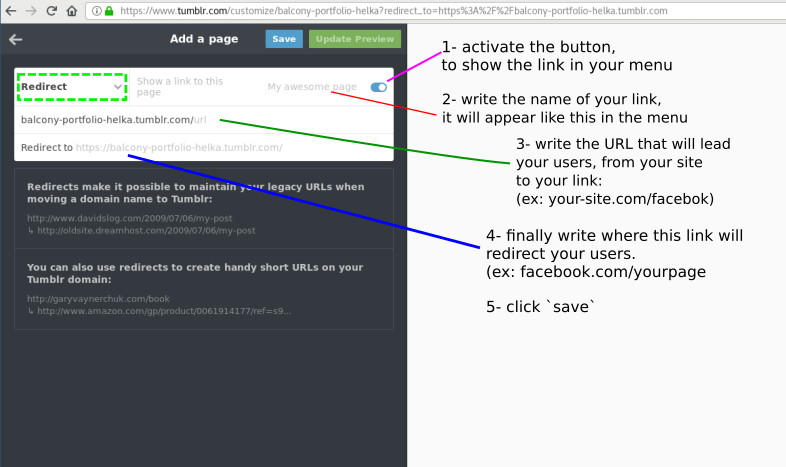
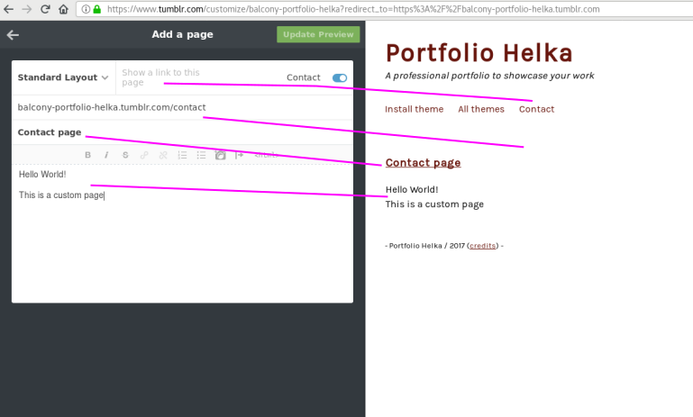

Create a link in ny site menu, to an "external page"
You will use this type of page if you would like to make a link in your menu to an external site.
It can be Facebook, Instagram, Soundcloud, Google Map, anything that you can link to!

Create a link in ny site menu, to an "standard layout page"
In the image bellow, we create links (line in pink), between what you write on the left and how it appears on the right your final page.

Create a link in ny site menu, to an "custom layout page"
You will have to do the same as for other page types, but it will require you to write code (html,css, javscript). If you want to learn,, we recommand you to use Codecademy. You can learn how to be independant in a couple of days, honestly!